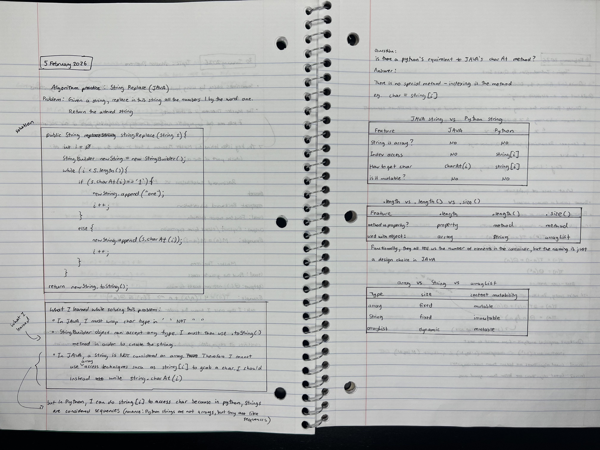
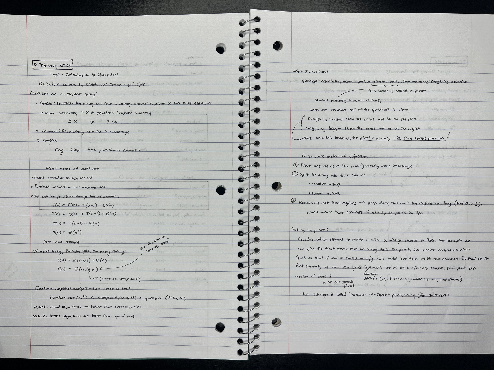
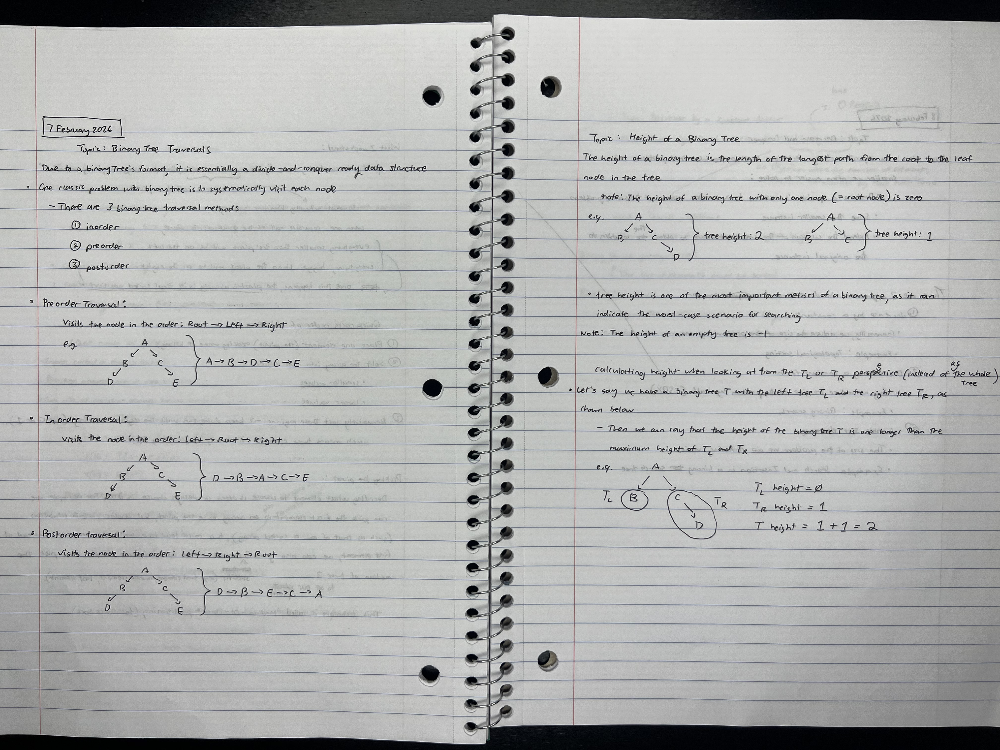
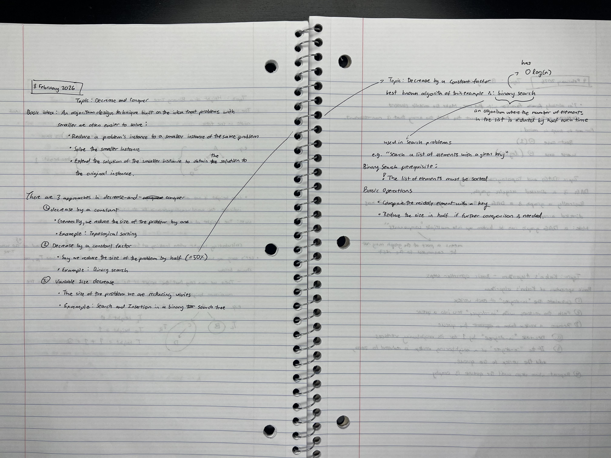
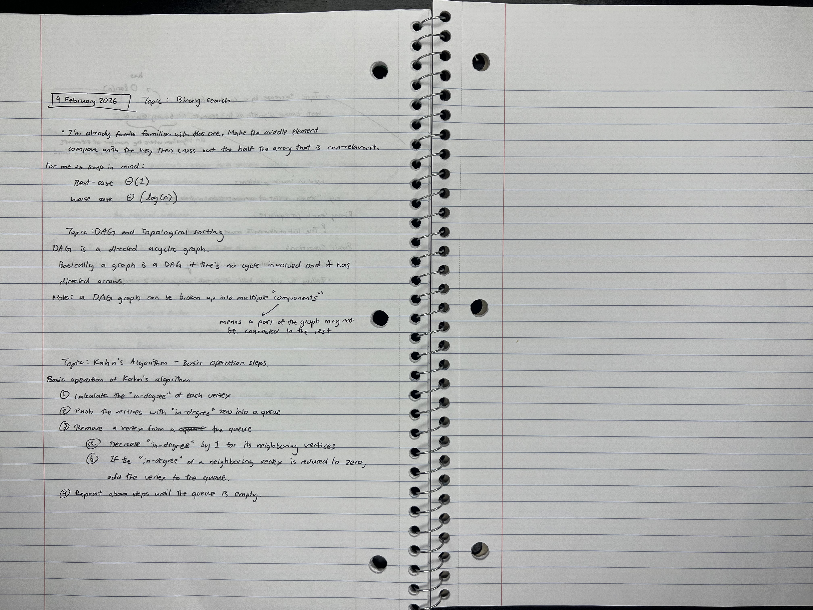

Week 5
( 4 February 2026 ) to ( 10 February 2026 )
Analysis of my learning for the week:
All of this week's learning concept was easy to understand; however, it is in practice - translating to code - that I have a problem with. This often makes me question myself: do I actually understand the foundamentals? I understand all the relevant basics such as queues, for-loops, if and else, arrays, etc., and yet when trying to put them all together on a blank canvas, my mind becomes stuck on how to proceed when forming an algorithm.
This self limitation becomes very obvious once I start on the homework, especially when I start opening up multiple video tutorial tabs and stackoverflow posts. The good thing is once I find a pattern or a foundation to grab on, I start to become bit more self-directed. I've been told numerous times that "inherent" coding - the ability to think and "freestyle" in code - is hard. This brings memories of my French professor once telling me "you are not fluent in a language unless you can think in it (as in by using it)."
Understanding this, I see why I still struggle. Understandably it would be hard for anyone to feel "expert" in a language they were only exposed to 4 years ago. Fortunately, the cure simply means I need more practice - particularly in thinking in code. For this reason I've been really enjoying seeing a lot of pseudocodes for this week. Decoding and rewriting pseudocodes forces my brain to practice "free style" coding which is great for improving my "thinking in code" and code workflow skills.




